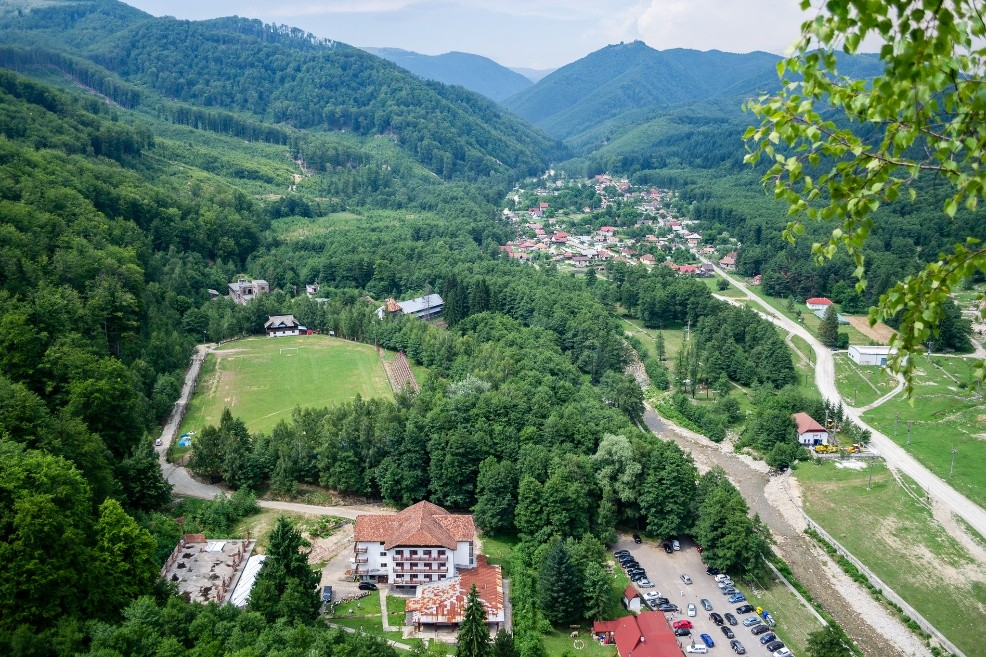

Despre regiune
Baia de Fier & Polovragi
Situate la poalele Munților Parâng, în județul Gorj, cele două comune sunt poarta spre Cheile Olteților, Peștera Polovragi și unele dintre cele mai spectaculoase trasee alpine din sudul Carpaților.
Localizare~40 km de Târgu Jiu, accesibil pe DN67 și DN67B
Relief & NaturăCheile Olteților, Peștera Polovragi (10.416m lungime), Munții Parâng
IstoricMănăstirea Polovragi (1505), tradiții și meșteșuguri gorjenești autentice